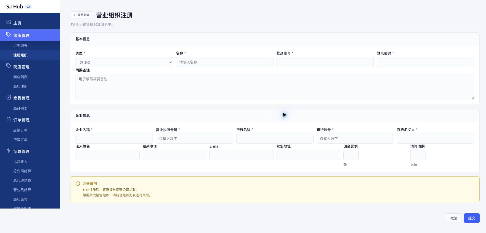
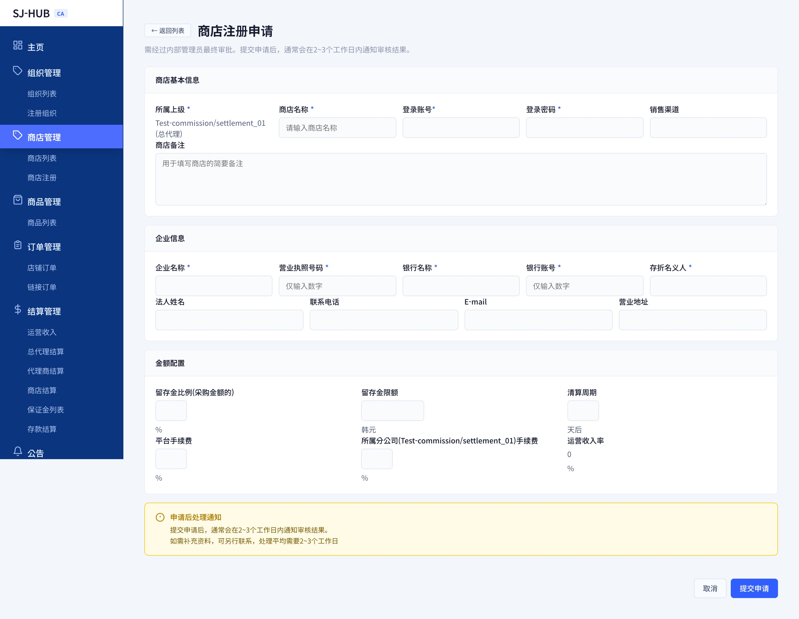

CHAPTER 2
조직관리
총괄대리점·유통업체 조회 · 신규 등록 · 하위 조직 등록
조직 위계
조직 목록
조직 등록
하위 조직 등록
상점 등록
1
조직 위계 이해하기
CA 아래 영업 조직은 최대 2단계입니다. 상점(대리점)을 관리하기 전에 먼저 이 구조부터 이해하세요.
| 단계 | 한국어 | 중文 | 역할 |
|---|---|---|---|
| 1 | 총괄대리점 | 总代理 | CA 바로 아래 조직. 유통업체를 만들고 관리합니다. |
| 2 | 유통업체 | 代理商 | 총괄대리점 아래 조직. 현장에서 상점을 직접 등록하고 관리하는 실무 조직입니다. |
두 단계 모두 있어야 하는 것은 아닙니다. 총괄대리점 없이 유통업체만 있거나, 유통업체 없이 총괄대리점 밑에 바로 상점이 연결될 수도 있습니다. 실제 상점(매장)은 이 챕터가 아니라 상점관리에서 별도로 등록합니다.
1
조직 목록 화면 (组织列表)
등록된 모든 총괄대리점·유통업체를 조회하고, 여기서 하위 조직·상점 등록, 수정·삭제까지 처리합니다.

1
2
3
사용 방법
1
검색 필터로 좁혀보기
승인상태(전체/승인/신청중/정지), 조직구분(전체/총괄대리점/유통업체), 명칭·계정 검색어로 원하는 조직만 걸러볼 수 있습니다.
2
테이블에서 상태 확인
유형(총괄대리점/유통업체), 소속 상위조직, 명칭·계정, 활동상태, 정산주기, 등록일을 확인합니다. 이 조직이 실제로 가져가는 수수료비율은 이 목록이 아니라, 이 조직 산하로 상점을 등록할 때 상점마다 설정됩니다.
3
행별 관리 버튼 사용
총괄대리점 행에는 "하위 유통업체 등록" 버튼이 보이고, 유통업체는 최하위 조직이라 하위 등록 버튼이 없습니다. "수정/상세"로 정보를 고치고, "삭제"로 제거합니다(되돌릴 수 없음).
2
"상점 등록" 버튼 — 영업조직 산하 브랜드를 붙이는 유일한 경로
총괄대리점·유통업체 밑에 새 브랜드(상점)를 붙이려면, 상점관리 > 상점등록 탭이 아니라 반드시 이 조직 목록 행의 파란색 "상점 등록(注册商店)" 버튼을 사용해야 합니다.
이 버튼으로 여는 등록 화면의 상세 설명(상위조직 자동 고정, 수수료 입력란, 영업수익률 자동 계산 등)은 "상점 등록" 탭에서 다룹니다.
1
기본정보 & 기업정보 입력
새 총괄대리점·유통업체를 등록합니다. 특정 상위 조직 밑에 바로 연결해서 등록하려면 이 탭이 아니라 조직 목록에서 상위 조직 행의 "하위 조직 등록" 버튼을 사용하세요.

1
2
3
4
5
사용 방법
1
유형 선택 (필수)
총괄대리점/유통업체 중 하나를 고릅니다. 명칭·로그인 계정·비밀번호도 함께 입력합니다(모두 필수).
2
비밀번호 입력 시 주의
로그인 비밀번호 칸은 화면에 글자가 그대로 보이는 형태(마스킹 없음)입니다. 다른 사람이 볼 수 있는 환경에서는 주의하세요.
3
기업정보 입력
기업명·영업허가증번호(숫자만)·은행명·계좌번호(숫자만)·예금주는 필수, 대표자명·연락처·이메일·주소는 선택입니다.
4
정산주기 설정
선택 항목입니다. 수수료비율은 이 화면에서 입력하지 않습니다 — 이 조직이 실제로 가져갈 몫은 이 조직 산하에 조직 목록의 "상점 등록" 버튼으로 상점을 등록할 때 정해집니다.
5
제출하기
"제출"을 누르면 확인창이 뜨고, 확인하면 즉시 등록됩니다. "취소"를 누르면 조직 목록으로 돌아갑니다.
💬 이 탭에서는 상위 조직을 지정하지 않고 등록합니다. 등록 후 특정 총괄대리점 밑에 연결하려면 조직 목록에서 별도로 연결 작업을 해야 합니다.
1
하위 조직 등록하기
총괄대리점 밑에 유통업체를 새로 만들려면 "조직 등록" 탭이 아니라 조직 목록 화면의 버튼을 사용해야 합니다.
1
2
사용 방법
1
목록에서 상위 조직 행의 버튼 클릭
조직 목록 탭에서 상위가 될 총괄대리점의 행을 찾아 "하위 유통업체 등록" 버튼을 누릅니다.
2
나머지 정보 입력
상위조직이 이미 선택된 상태로 등록 화면이 열립니다. 나머지 항목은 "조직 등록" 탭과 동일하게 입력합니다.
용어 안내 — 이 화면에서는 "유형" 항목이 "구분"이라는 이름으로 표시될 수 있습니다. 같은 항목을 가리키는 다른 표기이니 혼동하지 마세요.
1
영업조직 산하 상점 등록하기
조직 목록 탭에서 총괄대리점·유통업체 행의 파란색 "상점 등록" 버튼을 누르면 열리는 화면입니다. 여기서 설정하는 수수료가 그 조직이 실제로 가져갈 몫으로 정산에 반영됩니다.

1
2
3
4
5
사용 방법
1
소속 상위조직 자동 고정
어느 조직 행에서 눌렀는지에 따라 "소속 상위" 항목에 그 조직명이 읽기전용으로 미리 표시됩니다(예시 화면: "Test-commission/settlement_01 (总代理)"). 이 화면에서는 상위조직을 바꾸거나 지울 수 없습니다.
2
유보금비율·유보금한도·정산주기 설정
사이드바 상점등록 화면과 동일한 항목입니다. 유보금비율(판매 건당 원천징수 비율), 유보금 한도액, 정산주기를 설정합니다.
3
플랫폼수수료 입력
이 상점이 플랫폼 이용 대가로 낼 수수료율입니다.
4
상위조직 수수료 입력
라벨에 그 조직명이 괄호로 표시됩니다(예시: "所属分公司(Test-commission/settlement_01)手续费"). 이 조직이 총괄대리점 하나뿐인 체인이면 이 칸 1개만 나타나고, 총괄대리점 밑에 유통업체까지 연결된 체인이면 칸이 하나 더 늘어나 두 조직의 수수료를 각각 입력합니다.
5
영업수익률 자동 계산 확인
플랫폼수수료와 상위조직 수수료를 입력하면, PG수수료(3.52%)까지 제외한 값이 이 칸에 실시간으로 자동 계산되어 표시됩니다. 직접 입력하는 칸이 아니라 결과만 보여주는 칸입니다.
(혼동 주의) 등록 경로는 두 가지로 나뉩니다
· CA(운영사) 직속 브랜드 → 사이드바 상점관리 > 상점등록 탭에서 등록 (상위조직 수수료 칸 없음)
· 총괄대리점·유통업체 산하 브랜드 → 이 화면(조직 목록의 "상점 등록" 버튼)으로 등록 (상위조직 수수료 칸 있음)